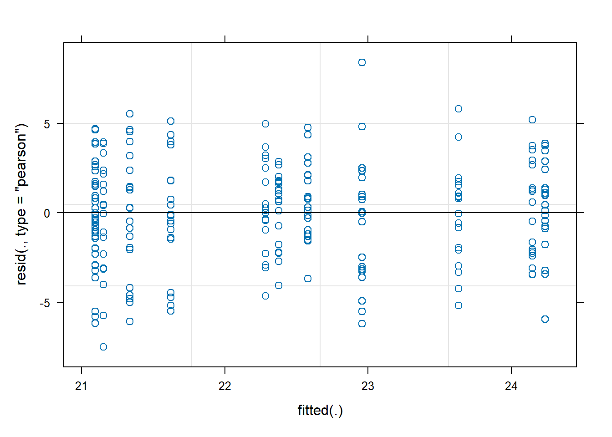
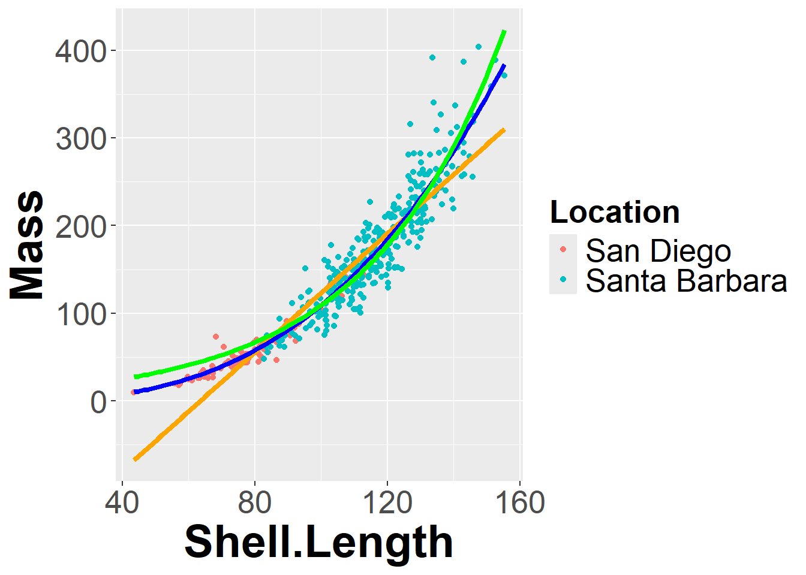

add code chunks by clicking the Insert Chunk button on the toolbar or by pressing Ctrl+Alt+I to answer the questions!
use visual mode or render your file to produce a version that you can see!
render your file to make sure it runs (and that you haven’t been working out of order)
save your work often
commit it via git!
push updates to github
In a study considering how the presence of sea stars changed snail growth patterns, ~25 snails were grown in containers containing 0,1, or 2 seastars.
Since non-consumptive effects are often threshold based, these treatments levels should be considered as groups (not as a continuous variable!). The data is available at
FL is the final length of measured snails, and the treatment (coded 1-3) correspond to [1=Control (no predators). 2=1 predator treatment,3=2 predator treatment).
What method would you use to analyze this data and why? Carry out your test, stating your null hypothesis, test assumptions, p-value, and interpretation.
Describe any necessary steps and provide graphics and values as needed. If needed, can you determine which treatments differ from each other?
Linear mixed model fit by REML ['lmerMod']
Formula: FL ~ Treatment_new + (1 | Container)
Data: snail
REML criterion at convergence: 1163.4
Scaled residuals:
Min 1Q Median 3Q Max
-2.62147 -0.68438 0.04799 0.62360 2.93899
Random effects:
Groups Name Variance Std.Dev.
Container (Intercept) 0.6509 0.8068
Residual 8.2124 2.8657
Number of obs: 234, groups: Container, 12
Fixed effects:
Estimate Std. Error t value
(Intercept) 23.7426 0.5178 45.857
Treatment_newSingle predator -2.2159 0.7295 -3.037
Treatment_newTwo predators -1.8844 0.7353 -2.563
Correlation of Fixed Effects:
(Intr) Trt_Sp
Trtmnt_nwSp -0.710
Trtmnt_nwTp -0.704 0.500
plot(snail_mm)

check_mixed_model <-function (model, model_name =NULL) {#collection of things you might check for mixed modelpar(mfrow =c(2,3))#not sure what this does with mutliple random effects, so stop with 1 for nowif(length(names(ranef(model))<2)){qqnorm(ranef(model, drop = T)[[1]], pch =19, las =1, cex =1.4, main=paste(model_name, "\n Random effects Q-Q plot")) }plot(fitted(model),residuals(model), main =paste(model_name, "\n residuals vs fitted"))qqnorm(residuals(model), main =paste(model_name, "\nresiduals q-q plot"))qqline(residuals(model))hist(residuals(model), main =paste(model_name, "\nresidual histogram"))}check_mixed_model(snail_mm)library(car)Anova(snail_mm, type ="III")
Warning: `aes_string()` was deprecated in ggplot2 3.0.0.
ℹ Please use tidy evaluation idioms with `aes()`.
ℹ See also `vignette("ggplot2-in-packages")` for more information.
bar_graph_with_error_bars
Since multiple oysters were measured in each cage, we need to use a random effect to account for cages. You could also block by cages- it takes up more degrees of freedom, but you have plenty here. Results show a significant differce among treatments (Chi^2~2=10.681, p <.01), so I used a Tukey post hoc test to determine which groups differed from others while controlling for the family wise error rate. REsults indicate the presence of a predator impacts length but not the density.
(From OZDasl) The data give the ambient temperature and the number of primary O-rings damaged for 23 of the 24 space shuttle launches before the launch of the space shuttle Challenger on January 20, 1986. (Challenger was the 25th shuttle. One engine was lost at sea and could not be examined.) Each space shuttle contains 6 primary O-rings.
Note these are counts. We can analyze this data using a Poisson distribution or binomial. Make sure you understand why each one is possible, which one is better, and carry out the analysis. Data is available @
rings <-read.table("http://www.statsci.org/data/general/challenger.txt", header = T)#can do as poissonrings_poisson <-glm(Damaged ~ Temp, rings, family ="poisson")summary(rings_poisson)
Call:
glm(formula = Damaged ~ Temp, family = "poisson", data = rings)
Coefficients:
Estimate Std. Error z value Pr(>|z|)
(Intercept) 5.9691 2.7628 2.161 0.0307 *
Temp -0.1034 0.0430 -2.405 0.0162 *
---
Signif. codes: 0 '***' 0.001 '**' 0.01 '*' 0.05 '.' 0.1 ' ' 1
(Dispersion parameter for poisson family taken to be 1)
Null deviance: 22.434 on 22 degrees of freedom
Residual deviance: 16.834 on 21 degrees of freedom
AIC: 36.061
Number of Fisher Scoring iterations: 6
#note dispersion is oklibrary(car)Anova(rings_poisson, type ="III")
#or binomial (preffered as we can add info (number damaged and not!))rings_binomial <-glm(cbind(Damaged, 6- Damaged) ~ Temp, rings, family ="binomial")summary(rings_binomial)
Call:
glm(formula = cbind(Damaged, 6 - Damaged) ~ Temp, family = "binomial",
data = rings)
Coefficients:
Estimate Std. Error z value Pr(>|z|)
(Intercept) 5.08498 3.05247 1.666 0.0957 .
Temp -0.11560 0.04702 -2.458 0.0140 *
---
Signif. codes: 0 '***' 0.001 '**' 0.01 '*' 0.05 '.' 0.1 ' ' 1
(Dispersion parameter for binomial family taken to be 1)
Null deviance: 24.230 on 22 degrees of freedom
Residual deviance: 18.086 on 21 degrees of freedom
AIC: 35.647
Number of Fisher Scoring iterations: 5
#note dispersion is okAnova(rings_binomial, type ="III")
Since these are counts we need to use a glm to model the data. We could use a Poisson, but the binomial actually includes more information (like how many did not fail!). Both models indicate a significant relationship between temperature and the number or proportion of failed rings. Results are compared to a linear model.
Returning to the whelk length-mass relationship from class, try fitting an exponential curve to the data. As a hint, try
Location Mass Sex Shell.Length
1 San Diego 126.10 F NA
2 San Diego 119.92 M 106.21
3 San Diego 40.07 M 75.58
4 San Diego 140.82 F 107.59
5 San Diego 49.70 M 76.23
6 San Diego NA M 70.10
summary(whelk)
Location Mass Sex Shell.Length
Length:473 Min. : 9.906 Length:473 Min. : 43.58
Class :character 1st Qu.: 87.352 Class :character 1st Qu.: 90.50
Mode :character Median :150.325 Mode :character Median :109.89
Mean :152.590 Mean :106.56
3rd Qu.:209.476 3rd Qu.:122.30
Max. :403.892 Max. :155.28
NA's :28 NA's :33
#plotwhelk_plot +geom_smooth(method ="lm", se =FALSE, size =1.5, color ="orange")+geom_smooth(method="nls", # look at whelk_power$callformula = y ~ b0 * x^b1, method.args =list(start =list(b0 =1, b1 =3)), se=FALSE, size =1.5, color ="blue") +geom_smooth(method="nls", # look at whelk_exponential$callformula = y ~exp(b0 + b1 * x), method.args =list(start =list(b0 =1, b1 =0)), se=FALSE, size =1.5, color ="green")
Warning: Using `size` aesthetic for lines was deprecated in ggplot2 3.4.0.
ℹ Please use `linewidth` instead.
`geom_smooth()` using formula = 'y ~ x'
Warning: Removed 61 rows containing non-finite outside the scale range
(`stat_smooth()`).
Warning: Removed 61 rows containing non-finite outside the scale range
(`stat_smooth()`).
Removed 61 rows containing non-finite outside the scale range
(`stat_smooth()`).
Warning: Removed 61 rows containing missing values or values outside the scale range
(`geom_point()`).

We can use the nls model to consider exponential curve to the data. Various fits may be compared using AIC methods. In this case it appears that the power fit is the best (lowest AIC value).
Going back to the TEAM dataset, remember we found that elevation had no impact on carbon storage. But that was a linear fit. Use a gam (generalized additive model) to see if elevation can be related to carbon storage in an additive model. Note we can use the gamm (generalized additive mixed model) function in the mgcv package to denote mixed effects. For example (from help file)
A generalized additive model fits a curve to the dataset (spline in this case). AIC comparison indicates the gam model with a random effect for site is the best fit.